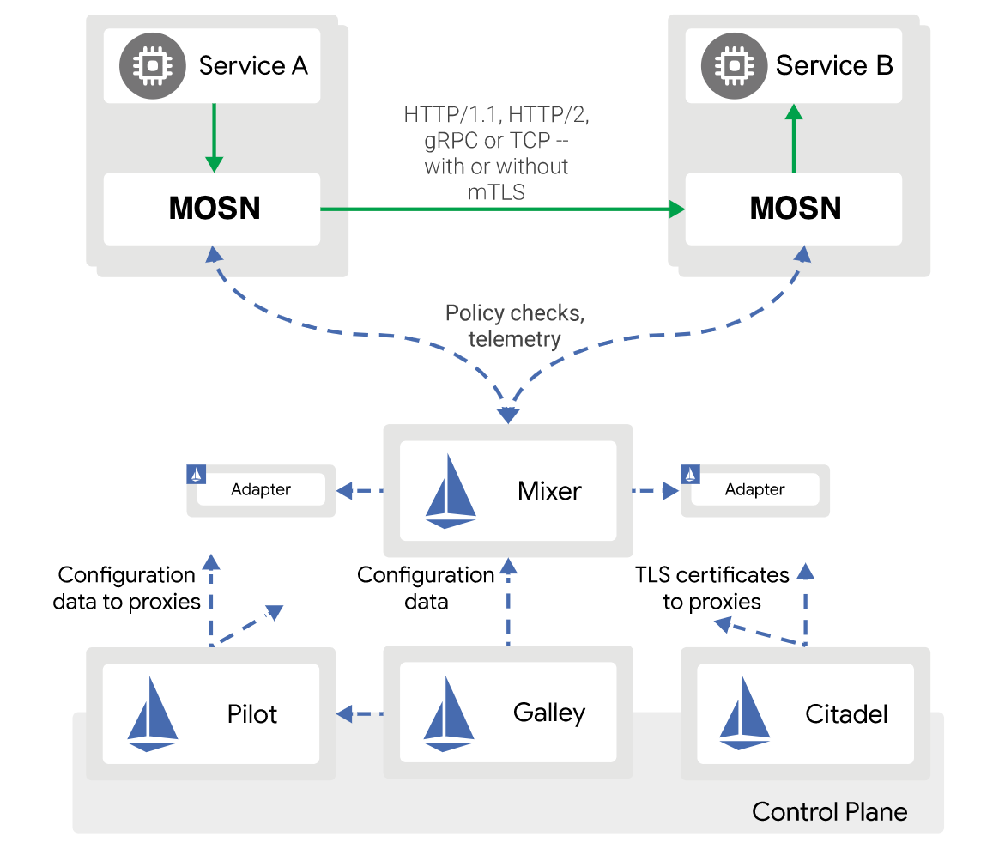

- 日期 :2018年7月16日
- 分类 : Service Mesh
4月，蚂蚁金服自主研发的分布式中间件（Scalable Open Financial Architecture，以下简称 SOFA ）启动开源计划，并开放多个组件，（相关背景请点击链接阅读《开源 |蚂蚁金服启动分布式中间件开源计划，用于快速构建金融级云原生架构》、《开源 | 蚂蚁金服分布式中间件开源第二弹：丰富微服务架构体系》），这一系列的动作受到大家的关注和支持，SOFA社区也日益壮大。
在两轮开源之后，蚂蚁金服自主研发的分布式中间件（Scalable Open Financial Architecture，以下简称 SOFA ）在今天推出了第三轮的开源产品：SOFAMesh。和前两轮开源的历经多年沉淀和打磨的成熟产品不同，本轮的开源主角SOFAMesh，将探索一条和以往产品有所不同的开源道路。下面我们就来看看到底有哪些不同吧！
SOFAMesh的开源探索之路
SOFAMesh尝试在以下几个方面进行自我突破和勇敢探索：
全新的技术领域
Service Mesh是目前技术社区最为炙手可热的新技术方向，有下一代微服务的明显趋势。但是目前Service Mesh技术还处于发展早期，暂时还没有成熟的产品，尤其缺乏大规模的落地实践。
较早的开源时间
在上述背景下，我们选择了将启动不久的Service Mesh产品开源在开发早期，也就是还未成熟之时，就对社区开放，开放源码并寻求社区合作。
更加开放的态度
在SOFAMesh上，我们愿意以开源共建的方式来和社区一起推进Service Mesh技术的更好发展和实现落地实践，共同打造一个技术先进，功能丰富，具备良好的性能和稳定性，可以实实在在的生产落地的优秀产品。欢迎国内技术社区的朋友们和我们开展不同层面的交流与合作。
务实的产品路线
SOFAMesh在产品路线上，选择了跟随社区主流，我们选择了目前Service Mesh中最有影响力和前景的Istio。SOFAMesh会在Istio的基础上，提升性能，增加扩展性，并在落地实践上做探索和补充，以弥补目前Istio的不足，同时保持与Istio社区的步骤一致和持续跟进。
SOFAMesh介绍
SOFAMesh将在兼容Istio整体架构和协议的基础上，做出部分调整：
- 使用Golang语言开发全新的Sidecar，替代Envoy
- 为了避免Mixer带来的性能瓶颈，合并Mixer部分功能进入Sidecar
- Pilot和Citadel模块进行了大幅的扩展和增强
我们的目标：打造一个更加务实的Istio落地版本！
备注：以上架构调整的细节以及我们做调整的出发点和原因，请浏览 蚂蚁金服大规模微服务架构下的Service Mesh探索之路 一文，有非常详尽的解释。
开源内容
在本轮开源中，我们将推出SOFAMesh目前正在开发的两大模块：MOSN和SOFAPilot。
1.MOSN
SOFAMesh中Golang版本的Sidecar，是一个名为MOSN(Modular Observable Smart Netstub)的全新开发的模块，实现Envoy的功能，兼容Envoy的API，可以和Istio集成。

此外，我们会增加对SOFARPC、Dubbo等通讯协议的支持，以便更好的迎合国内用户包括我们自身的实际需求。
由于Sidecar相对独立，而且我们也预期会有单独使用MOSN的场景，因此MOSN的代码仓库是独立于SOFAMesh的，地址为： https://github.com/sofastack/sofa-mosn
欢迎大家使用，提供需求、反馈问题、贡献代码或者合作开发。
2.SOFAPilot
我们将大幅扩展和增强Istio中的Pilot模块：

- 增加SOFARegistry的Adapter，提供超大规模服务注册和发现的解决方案
- 增加数据同步模块，以实现多个服务注册中心之间的数据交换。
- 增加Open Service Registry API，提供标准化的服务注册功能
MOSN和SOFAPilot配合，将可以提供让传统侵入式框架（如Spring Cloud，Dubbo，SOFA RPC等）和Service Mesh产品可以相互通讯的功能，以便可以平滑的向Service Mesh产品演进和过渡。
Pilot和后面会陆续开放的Mixer，Citadel等Istio模块，会统一存放在同一个从Istio Fork出来的代码仓库中。未来会持续更新Istio最新代码，以保持和Istio的一致。
附录
本文中提到的链接地址集合：